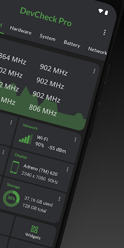

DevCheck 快问快答：二手机验机到底能不能靠它
整理一篇关于 DevCheck 的速查问答——二手机党、ROM 折腾党、数码爱好者必读，覆盖功能、安装、验机实战和常见坑。
整理一篇关于 DevCheck 的快问快答。这款应用在 Android 数码圈挺火，但真正用过的人未必能说清它能干什么、哪些功能值得掏钱、二手机验机时该怎么用才不踩坑。下面替你把该问的都问了。
它是什么？和安兔兔、鲁大师有什么区别？
DevCheck 是一款专注于 Android 设备硬件信息展示和硬件测试的工具，在它的官网上能看到完整的功能列表和版本更新记录。和跑分软件最大的不同是——它不跑分，只做"测"和"显"。安兔兔跑个分告诉你"这手机性能排第几"，DevCheck 告诉你"这手机里装的到底是什么"。
它的核心能力分两块：一块是硬件信息页——SoC 型号、GPU、内存、存储、传感器、屏幕参数，全按实际硬件读取，不是厂商宣传值；另一块是硬件测试——振动、屏幕坏点、多点触控、扬声器、摄像头对焦这些，逐项触发硬件检查是否正常。
简单说：跑分软件给你一个数字，DevCheck 给你一份体检报告。
谁需要装？什么场景下用得上？
三类人刚需。
第一类是二手机买家——这是 DevCheck 最核心的使用场景。买二手 Android 之前跑一遍，能直接帮你排除改标机、山寨机、刷过固件的机器。下一节展开讲。
第二类是 ROM 折腾党——刷了新系统之后想确认传感器有没有工作、Bootloader 状态、KNOX 是否熔断、DRM L1/L3 状态，这些信息系统设置里翻半天找不到，DevCheck 一个标签页全看完。
第三类是数码爱好者和开发者——想知道自己手机的振动马达是线性还是转子、屏幕是哪家的面板、传感器具体型号，DevCheck 的硬件页比厂商官网给的参数还细。
怎么装？免费版够用吗？
直接去 Google Play 搜 DevCheck 就能装。国内应用商店不一定有，也可以从DevCheck下载拿安装包，装完打开所有测试功能先跑一遍确认没问题。
免费版已经覆盖了最常用的东西——所有硬件信息页 + 基础硬件测试（振动、屏幕、多点触控、扬声器、摄像头）+ 三个诊断小工具（Root Check、蓝牙扫描、CPU 实时负载）。二手机验机的核心流程用免费版就能走完。
Pro 版是一次买断的付费，多出的东西主要是：完整性验证（Bootloader + Play Integrity + DRM 状态）、Wi-Fi 信道扫描、网络映射、GPS 工具、USB 验证、权限汇总这些进阶诊断工具。如果你只是偶尔验一台二手机，免费版完全够；如果你经常折腾 ROM 或者需要测网络环境，Pro 版值回票价。

二手机验机怎么用？给一套实战流程
这是 DevCheck 被用得最多的场景，但很多人只是随便点两下测试就完了——其实验机有个推荐的顺序和关注点。
第一步，先看硬件信息页。核对 SoC 型号、核心配置、GPU 三者是不是匹配——骁龙 8 Gen 2 必须配 Adreno 740 和 1+4+3 架构，三者对不上必是改标。然后看内存存储容量有没有接近翻倍（宣传 6GB/256GB 但硬件页显示 12GB/512GB 的基本是 ROM 篡改），安全补丁日期是不是和机型发布年份对得上。
第二步，跑六个硬件测试。屏幕坏点、多点触控、振动、扬声器、摄像头对焦、按键响应——每个测试都是几秒钟的事。重点关注组合信号：比如 SoC 不匹配 + 安全补丁老旧 + Bootloader 解锁，这三个加起来基本可以断定机器被刷过或者改标了。
第三步，查系统页。看 Bootloader 状态、KNOX（三星机必查，KNOX WARRANTY VOID = 0x1 说明保修没了）、系统版本和安全补丁日期。
单一异常不用慌——可能是 ROM 的小问题。但多个数据同时异常就要警惕了，建议要么大幅砍价要么直接放弃。
诊断工具集里有哪些被低估的小功能？
免费版的 Root Check 比系统自带的 root 检测细得多，能识别是 Magisk、SuperSU 还是 KernelSU，还能看 SELinux 模式——ROM 折腾党刷完机跑一下，确认 root 状态正常再装模块。每个检测项的具体含义和判定标准在DevCheck文档里都有详解。
CPU Analysis 在有 root 或 Shizuku 的情况下能看到每个核心的实时负载百分比，调 CPU 调度器的时候特别有用。
Pro 版的 Integrity Check 是 ROM 折腾党的宝——刷了非官方系统之后跑一下，Play Integrity API 如果过不了，很多银行 App 和 DRM 视频（Netflix L1）都用不了，这个测试能提前告诉你要不要补 Shamiko 或者 Zygisk 的配置。
用它有什么坑或者局限要注意？
有几个常见的误区。
不是所有数据都能在未 root 状态下拿到——比如 CPU 各核心的细粒度频率、部分传感器的完整读数，没有 root 或 Shizuku 权限时会被系统屏蔽。DevCheck 拿不到数据不是坏了，是 Android 权限模型不让拿。
ROM 可能篡改硬件信息的上报值——改标机刷的定制 ROM 会把硬件页的 SoC 型号、内存容量都改成假数据。DevCheck 是从系统 API 拿数据的，ROM 改了 API 输出它就跟着读假的。所以验机时要组合多个信号交叉验证，别单看硬件页一项。
传感器全空不一定是坏了——有些山寨 ROM 会直接屏蔽传感器读数来掩盖硬件问题，但也有可能只是系统权限没给全。进设置 → 应用 → DevCheck → 权限，确认传感器权限都开了再判断。
和同类工具比，DevCheck 好在哪？
硬件检测类 App 还有 Device Info HW、CPU-Z（Android 版）、AIDA64 这些。DevCheck 的优势在于信息展示干净 + 内置测试全 + 诊断工具集三合一。Device Info HW 偏硬件参数查询，没有内置测试；CPU-Z 只看 CPU 和传感器；AIDA64 很全但界面是 PC 软件风格，手机上看着费劲。
DevCheck 的硬件测试覆盖了屏幕、振动、扬声器、摄像头、按键、传感器六大类，每类测试都有明确的异常信号说明——它不只是给你一个测试按钮，还告诉你"测完看到什么算坏"。
值不值得长期装？
值得。免费版零广告、几 MB 大小、不占后台，开机自检也不会偷偷跑。不管你是一年买一台二手机还是天天刷 ROM，装着备用没什么成本，真遇到问题的时候它能帮你省掉很多扯皮的时间。Pro 版按需升级，但即使不掏钱，免费版已经够用了。